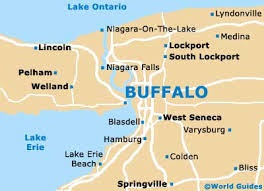

Niagara Falls State Park is the oldest state park in the U.S. Established in 1885 as the Niagara Reservation, it was the first of several such reservations that eventually became the cornerstones to the New York State Office of Parks, Recreation and Historic Preservation. Frederick Law Olmsted was a visionary for Niagara Falls State Park. He also designed Central Park in New York City.
Niagara Falls State Park stretches over 400 acres, with close to 140 acres of that underwater. Green Island, situated between Goat Island and the mainland, was named after Andrew Green, first president of the commission at the State Reservation at Niagara. He was a very prominent professional in New York City and was critical to the construction of Central Park, as well as the planning of northern Manhattan and today’s Bronx. Green helped establish influential cultural institutions, such as the Museum of Natural History, Metropolitan Museum of Art and the Bronx Zoo. Most importantly, he led the Greater New York movement that joined the municipalities around Manhattan Island into today’s five-borough city. Three Sisters Islands were named after the daughters of Parkhurst Whitney, a hotelman and prominent local citizen. The girls were named Asenath, Angeline and Celinda Eliza. A statue of Chief Clinton Rickard, who was the founder of the Indian Defense League in 1926, can be found in the Welcome Plaza at Prospect Park.

Niagara Falls is a series of three waterfalls on the Niagara River, spanning the border between Canada and the United States. The three falls are the Horseshoe Falls (also known as the Canadian Falls), the American Falls, and the Bridal Veil Falls. Niagara Falls is known for its immense beauty and impressive volume of water, though not the tallest waterfall in the world, according to Niagara Falls USA.
Here's a more detailed look at Niagara Falls: Location and Formation: Niagara Falls is located at the southern end of the Niagara Gorge, where the Niagara River flows between Lake Erie and Lake Ontario, according to Britannica Kids. The falls were formed by glacial meltwater during the last Ice Age, carving a path through the Niagara Escarpment, says the City of Niagara Falls Website. The falls are gradually eroding backward, and have been for thousands of years. Key Features: Horseshoe Falls: The largest of the three falls, located on the Canadian side, notes the Simple English Wikipedia. American Falls: Located on the American side of the border, according to History Channel. Bridal Veil Falls: A smaller, more picturesque fall located near the American Falls, says www.niagarafallslive.com. Niagara River: The river that forms the falls, carrying water from the Great Lakes, says Britannica. Significance: Tourism: Niagara Falls is a major tourist destination, attracting millions of visitors each year, according to PBS. Hydroelectric Power: The falls have been harnessed for electricity since the late 19th century, providing a significant amount of power to both the US and Canada, notes the Times of India. Ecosystem: Niagara Falls supports a rich freshwater ecosystem, including a diverse variety of gulls, according to PBS.